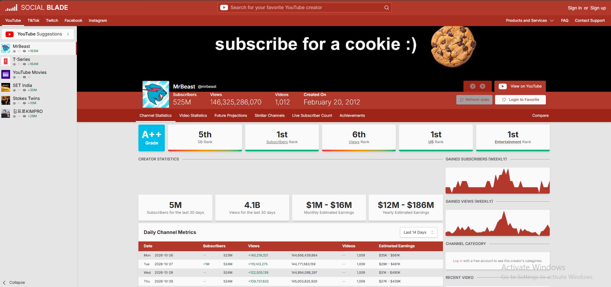
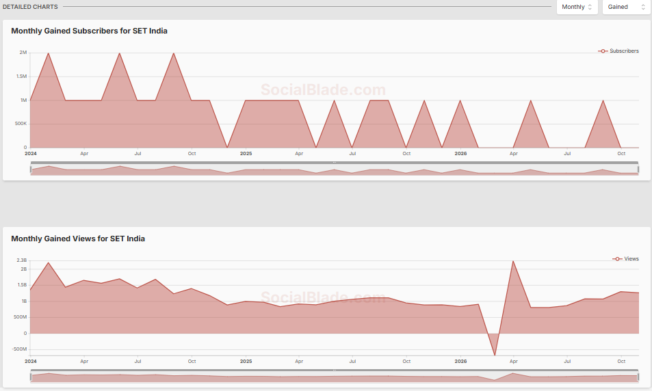
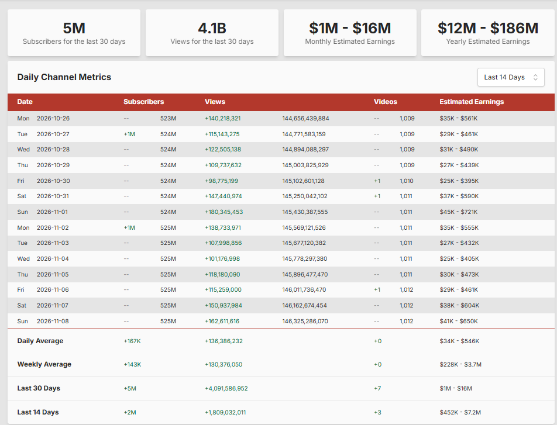
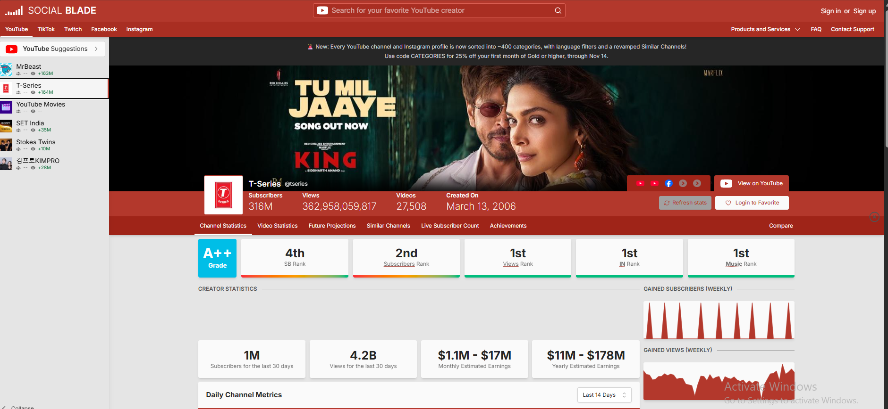

Social Blade is a web-based analytics tool that helps people track public statistics from social media profiles. It brings data from platforms such as YouTube, Instagram, TikTok, Twitch, and Facebook into one place. Users can look at follower or subscriber counts, views, growth history, rankings, charts, and other public profile details.
Many creators use Social Blade to understand how their channels or profiles are changing over time. Viewers can also explore popular creators, compare public statistics, and see estimated earnings for some profiles. These earnings are estimates, not confirmed payments or private income records.
This guide explains what Social Blade does, how it works, which platforms it supports, how to check a profile, and what its numbers can and cannot tell you.
What Is Social Blade?
Social Blade is a social media statistics and analytics website. Its main goal is to collect public information from social media profiles, organise that information, and show it in a way that people can understand. Instead of opening many different profiles and recording their numbers by hand, users can search for a creator on Social Blade and review several useful statistics on one page.
For example, a YouTube creator can use it to review subscriber changes, daily views, channel rankings, and long-term growth. A Twitch streamer can check public channel statistics, while a brand may use the available data to study creators in its market.
Social Blade is not a social network. You do not upload videos or posts to it. It is a separate analytics service that displays information collected from supported public profiles.
How Does Social Blade Work?
Social Blade collects public profile statistics from supported social platforms and organises the information in its own database. It then presents the data through profile pages, charts, rankings, and other reports. The website says it aims to update profile information regularly, but the exact update timing can vary from one profile to another.
Popular profiles may receive updates more often. A profile with little traffic may be updated less often, so some daily figures can appear together after a gap. This means Social Blade should be treated as a useful tracking service, not as a live copy of every platform's dashboard.
The service works with public statistics. It does not reveal a creator's private account information or provide access to their private analytics. Some business services, such as reports and an API, are also available for users who need data in their own systems.
Which Platforms Does Social Blade Track?
Social Blade currently lists five main social platforms. The available statistics depend on the platform and the type of public profile.
- YouTube: Channel subscribers, views, growth history, rankings, video-related statistics where available, and estimated earnings.
- Instagram: Public creator and professional profile statistics, including follower-related information where supported.
- TikTok: Public creator statistics and growth information.
- Twitch: Public streamer and channel statistics, including follower and activity-related information.
- Facebook: Public Page statistics and related growth information.
Not every metric is available for every platform. For example, Social Blade's estimated earnings feature is not a confirmed income report for all five platforms. The information shown depends on the data Social Blade can collect and the features it provides for that platform.
Main Features of Social Blade
1. Creator and Channel Statistics
A profile page brings important public numbers together. Depending on the platform, this may include followers or subscribers, total views, daily changes, and other profile statistics. It gives users a quick way to review a creator's public performance.
2. Growth Charts and Historical Data
Charts help users see how a profile changes over time. Instead of looking at one number, you can review a pattern across days or weeks. Historical data can help you notice periods of faster growth, slower activity, or changes in views and followers.

3. Rankings and Top Lists
Social Blade provides lists that help users explore popular profiles and compare creators in different categories. Rankings can be useful for research, but a rank is only one measure. It does not explain the full quality, influence, or value of a creator's content.
4. Future Projections
The website can show projections based on past performance. These figures offer a possible view of how a profile may grow if a similar pattern continues. They are not promises. Real growth can change because of content, audience interest, platform changes, and many other factors.
5. Compare Creators
Comparison tools help users review public statistics from more than one profile. A creator can compare their channel with another channel in the same topic area. Brands may also use comparisons as an early step when researching creators for a campaign.
6. Reports and Business API
Social Blade offers reporting features and a business API for customers who need more than the standard website pages. The API can provide public statistics and top-list data for use in other systems. These tools are aimed at business and technical use, and access may require a paid plan or API credits.
How to Use Social Blade
You can search for a public profile on Social Blade without first learning complex analytics terms. Follow these basic steps:
- Open the website: Visit SocialBlade.com.
- Choose a platform: Select the social media platform you want to explore, such as YouTube, Instagram, TikTok, Twitch, or Facebook.
- Search for a profile: Enter the creator's name, username, or channel details in the search box.
- Open the correct result: Check the profile name and platform so you do not open a different account with a similar name.
- Review the statistics: Look at the available followers or subscribers, views, growth charts, rankings, and other profile information.
- Choose a date range: If the page offers historical data, use it to understand how the profile changed over time.
If a YouTube channel does not appear in search, try using its channel ID or an older custom URL when available. Social Blade's help pages explain that some channels may be harder to find through a simple name search.

How Social Blade Estimates Earnings
Estimated earnings are one of Social Blade's best-known features, especially for YouTube channels. However, it is important to understand what the numbers mean. Social Blade does not see a creator's private payment records. It uses an estimate based on public view counts and an assumed revenue rate.
In its help guide, Social Blade explains that its YouTube estimate uses a low and a high revenue per thousand views (RPM) value. It multiplies those values by the channel's views for the period, divided by 1,000. The result is shown as a range rather than one confirmed amount.
The estimate makes a broad assumption that views are monetised. In real life, not every view earns money. Some views may not show ads, and different video types, audiences, topics, and ad markets can have very different RPM values. Shorts and long-form videos can also earn in different ways.
For this reason, a Social Blade earnings range should not be treated as a creator's real monthly income. A channel may earn less or more than the estimate, or it may not be monetised at all.

Is Social Blade Accurate?
Social Blade can be useful for following public statistics and spotting broad growth trends. However, its numbers may not always match the figures shown inside a social media platform. There are several reasons for this:
- Update timing: Social Blade and the social platform may refresh their data at different times.
- Public data limits: Social Blade can only show information it can access and collect.
- Platform changes: A platform may adjust, remove, or correct public counts.
- Estimates: Earnings and future projections are calculations, not confirmed results.
- Profile eligibility: Some profiles or metrics may not meet the requirements for tracking.
Use Social Blade to study general patterns and compare public information. If you own the account, use its official creator dashboard for private analytics, exact monetisation information, and decisions that depend on accurate account data.
Is Social Blade Free?
Yes. Social Blade offers a free option. Its free features include access to public profile statistics, a limited number of saved favourites, top lists, future projections, live counts where available, and a limited amount of historical table data. The free experience is supported by advertising.
Social Blade also offers paid membership levels. Depending on the plan, paid features can include an ad-free experience, more saved profiles, larger top lists, longer historical data access, additional charts, YouTube report cards, and business API credits. The exact features and prices can change, so check the official Social Blade membership page before paying.
Most casual users can start with the free version. A paid plan may be more useful for people who regularly track many creators or need longer historical data and extra reporting tools.
The History of Social Blade
Social Blade began in 2008 as a hobby project created by Jason Urgo. The first version tracked statistics for Digg, a social news website. The original idea was to build a toolkit for tracking social media activity.
In July 2010, the project added YouTube statistics. This helped Social Blade reach a much wider audience as more people became interested in tracking video creators. The company was officially incorporated in 2012.
Social Blade later expanded to other platforms. It added Twitch in 2013, Instagram in 2014, Facebook in 2018, and TikTok in 2020. Today, its work focuses on organising public creator data and making social media trends easier to explore.
Advantages and Limitations of Social Blade
Advantages
- It brings public statistics from several social platforms into one service.
- It makes it easier to review creator growth over time.
- Charts and rankings help users explore trends and popular profiles.
- Users can compare public creator statistics.
- A free option is available for basic research.
- Business reports and an API support more advanced data needs.
Limitations
- It does not provide private account analytics.
- Some statistics may update later than the figures on the original platform.
- Estimated earnings are not actual income.
- Available metrics and profile coverage vary by platform.
- Some advanced features require a paid membership or business access.
Who Should Use Social Blade?
Social Blade can be useful for different types of users:
- YouTube creators: To follow public channel growth and compare progress over time.
- New creators: To learn how established channels perform and explore trends in a topic area.
- Live streamers: To review public statistics for supported streaming profiles.
- Brands and marketers: To research public creator profiles before planning outreach or campaigns.
- Viewers and researchers: To explore popular creators, rankings, and social media trends.
Social Blade is best used as a research and tracking tool. It cannot explain every reason behind a creator's success, and its estimates should not replace official account data.

Frequently Asked Questions
What is Social Blade used for?
Social Blade is used to track public social media statistics, creator growth, rankings, charts, and estimated earnings for supported profiles.
Is Social Blade free to use?
Yes. It offers a free, ad-supported option. Paid memberships add features such as more favourites, longer historical data access, larger top lists, and an ad-free experience.
Can Social Blade show the real earnings of a YouTuber?
No. Social Blade shows estimated earnings based on public view counts and assumed revenue rates. It cannot confirm a creator's actual YouTube payments.
Which social media platforms does Social Blade support?
Social Blade lists YouTube, Instagram, TikTok, Twitch, and Facebook as its main supported platforms. The available statistics differ by platform.
How often does Social Blade update statistics?
Update timing varies. Popular profiles may be updated several times during the day, while other profiles may be updated less often. Social Blade aims to keep profiles up to date at least once a day where possible.
Why are Social Blade numbers different from YouTube?
The two services may update at different times, and YouTube can adjust public counts. Social Blade may also have limits on the data it can collect. For your own channel, YouTube Studio is the better source for account-specific analytics.
Can I check Instagram and TikTok earnings on Social Blade?
Social Blade provides public statistics for Instagram and TikTok, but you should not assume it provides confirmed earnings for those platforms. Earnings information is an estimate where the feature is available.
Does Social Blade need my social media password?
You can search public profiles without giving Social Blade your social media password. Do not share your account password with third-party websites to view public statistics.
Can I compare two YouTube channels on Social Blade?
Yes. Social Blade provides comparison features that let users review public statistics from multiple creators, where the relevant data is available.
Final Thoughts
Social Blade is a helpful tool for people who want to understand public social media statistics. It brings profile data, growth charts, rankings, and other information from YouTube, Instagram, TikTok, Twitch, and Facebook into one place. Creators can use it to follow trends, while brands and researchers can explore public creator performance.
The most important point is to understand its limits. Social Blade does not show private account analytics, and estimated earnings are not confirmed income. Use it to study public trends, then check the original platform for the most accurate information about your own account.
To explore the tool, visit the official Social Blade website. For details about its data and features, you can also read its About page and estimated earnings explanation.